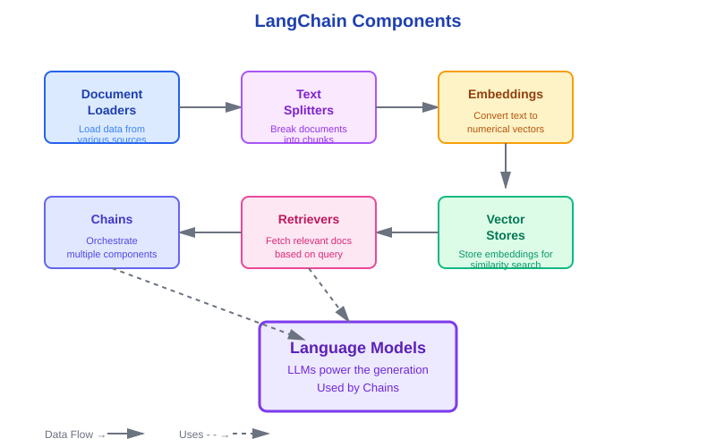

LangChain 101
Learning Objectives
- Understand what LangChain is and why it exists
- Learn the key components of the LangChain framework
- Recognize how LangChain simplifies RAG development
- Preview the LangChain components you'll use in this project
What is LangChain?
LangChain is an open-source framework for building applications powered by Large Language Models (LLMs). It provides modular, composable tools that handle the complexity of integrating LLMs with external data sources, APIs, and other components.
Think of LangChain as a toolkit that gives you pre-built, battle-tested components instead of building everything from scratch.
Why LangChain Matters
Building RAG systems involves:
- Loading documents from various formats (PDF, HTML, text, databases)
- Splitting text intelligently while preserving context
- Converting text to embeddings
- Storing and searching vectors efficiently
- Managing prompts and LLM calls
- Orchestrating multiple steps into a pipeline
- Handling errors and retries
LangChain provides production-ready implementations for all of these, letting you focus on your application logic rather than infrastructure.
LangChain Components

Key LangChain components and how they work together
1. Document Loaders
Purpose: Load data from various sources into a standard format
LangChain provides 100+ document loaders for different data sources:
TextLoader- Plain text filesPDFLoader- PDF documentsWebBaseLoader- Websites and HTMLCSVLoader- CSV filesNotionLoader- Notion pagesGoogleDriveLoader- Google Drive documents
from langchain.document_loaders import TextLoader
# Load a text file - LangChain handles file reading and formatting
loader = TextLoader("restaurant_data.txt", encoding="utf-8")
documents = loader.load()
# Returns list of Document objects with content and metadata
print(f"Loaded {len(documents)} document(s)")2. Text Splitters
Purpose: Break documents into smaller chunks while preserving context
Large documents need to be split for efficient retrieval. LangChain provides smart splitters that:
- Split on natural boundaries (paragraphs, sentences)
- Preserve context with overlapping chunks
- Maintain metadata (source, page numbers)
- Handle different document structures
from langchain.text_splitter import RecursiveCharacterTextSplitter
# Create splitter with specified chunk size and overlap
splitter = RecursiveCharacterTextSplitter(
chunk_size=1000, # Max characters per chunk
chunk_overlap=150 # Characters shared between chunks
)
# Split documents intelligently
chunks = splitter.split_documents(documents)
print(f"Created {len(chunks)} chunks")3. Embeddings
Purpose: Convert text into numerical vectors that capture semantic meaning
LangChain supports multiple embedding providers:
OpenAIEmbeddings- OpenAI's text-embedding modelsHuggingFaceEmbeddings- Open-source embedding modelsCohereEmbeddings- Cohere's embedding API
from langchain.embeddings import OpenAIEmbeddings
# Initialize embeddings model
embeddings = OpenAIEmbeddings()
# Convert text to 1536-dimensional vector
text = "What menu options are available?"
vector = embeddings.embed_query(text)
print(f"Embedding dimension: {len(vector)}")
# Output: Embedding dimension: 15364. Vector Stores
Purpose: Store embeddings and perform similarity search
Vector stores are specialized databases optimized for finding similar vectors quickly. LangChain integrates with many vector databases:
Chroma- Local, lightweight vector database (what we'll use)Pinecone- Cloud-hosted vector databaseWeaviate- Open-source vector search engineFAISS- Facebook's similarity search library
from langchain.vectorstores import Chroma
# Create vector store from documents
# Automatically embeds and stores all chunks
vectorstore = Chroma.from_documents(
documents=chunks,
embedding=embeddings
)
# Search for similar documents
results = vectorstore.similarity_search("reservation policy", k=3)
print(f"Found {len(results)} relevant chunks")5. Retrievers
Purpose: Interface for fetching relevant documents
Retrievers provide a standard interface for querying vector stores. They handle the complexity of similarity search and return the most relevant documents.
# Convert vector store to retriever
retriever = vectorstore.as_retriever(
search_kwargs={"k": 3} # Return top 3 most relevant chunks
)
# Use retriever in downstream components
# Retrievers have a standard interface that works with Chains6. Chains
Purpose: Orchestrate multiple components into workflows
Chains connect components together to build complete applications. Instead of manually calling each component, chains handle the data flow.
Common chain types:
RetrievalQA- Question answering with retrievalRetrievalQAWithSourcesChain- Q&A with source citationsConversationalRetrievalChain- Multi-turn conversations with memory
from langchain.chains import RetrievalQAWithSourcesChain
from langchain.chat_models import ChatOpenAI
# Create a chain that combines retrieval + generation
chain = RetrievalQAWithSourcesChain.from_chain_type(
llm=ChatOpenAI(temperature=0),
chain_type="stuff",
retriever=retriever,
return_source_documents=True
)
# Ask a question - the chain handles everything
result = chain({"question": "What is the dress code?"})
print(result["answer"])
print(f"Sources: {result['sources']}")7. Language Models
Purpose: Generate text based on prompts
LangChain provides unified interfaces for multiple LLM providers:
ChatOpenAI- OpenAI's chat models (GPT-4, GPT-3.5)Anthropic- Claude modelsHuggingFaceHub- Open-source modelsCohere- Cohere's generation models
How Components Work Together
In a typical RAG application, components connect like this:
- Document Loaders → Load raw data
- Text Splitters → Break into chunks
- Embeddings → Convert chunks to vectors
- Vector Stores → Store and index vectors
- Retrievers → Fetch relevant chunks for a query
- Chains → Combine retrieval + LLM generation
- Language Models → Generate final answers
LangChain vs. Building from Scratch
| Task | Without LangChain | With LangChain |
|---|---|---|
| Load documents | Write custom parsers for each format | 1 line: loader.load() |
| Split text | Implement chunking logic, handle edge cases | Configure splitter, call split_documents() |
| Create embeddings | API calls, batch processing, error handling | Handled automatically by vector store |
| Build pipeline | Manually orchestrate all steps | Use pre-built chains |
Key Takeaways
- LangChain provides modular, composable components for building LLM applications
- Components cover the full RAG pipeline: loading, splitting, embedding, storing, retrieving, and generating
- Chains orchestrate components into complete workflows
- LangChain abstracts complexity, letting you focus on application logic
- Swap implementations easily (different LLMs, vector stores, etc.)